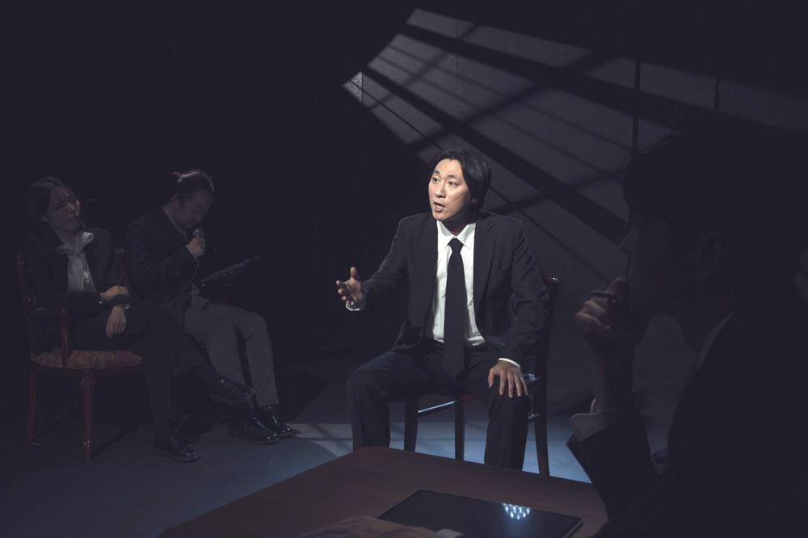

역사시비프로젝트: 승자의 관점을 거부하고 우리의 관점으로 역사를 다시 쓰는 3개년 프로젝트. 2024년 한 해 동안 매달 한 편씩, 1년 전 같은 달에 있었던 사건을 출발점으로 삼아 공연을 올렸다. 10월. 미워하는 대상이 있을 때 그를 미워해도 되는 단서를 대중매체에서 찾는 자신을 발견한다. 대중매체가 만들어 내는 강렬한 '아우라'를 바탕으로 1년 전 10월의 사건을 다시 읽는다.
2024.10.4–13 / 예술공간 혜화 - 역사시비프로젝트 10월
연출: 정유진
출연: 김용희, 이동영, 정연종, 최지현
조명디자인: 김주희
오퍼레이터: 박수빈
기록 촬영: 한문희
그래픽디자인: 워크룸
기획: 노지상
홍보: 김보람, 김세희
공동기획: 창작주체 예술공간 혜화
2024.10.14 비평
이전: 라이어게임 | 다음: 해리
아카이브로 돌아가기 | 아무 작품이나
발행일 2026.11.13